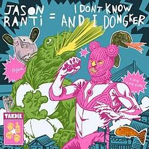
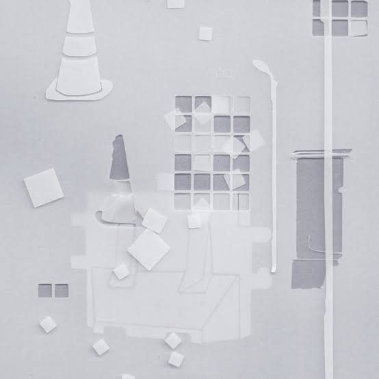

Lahir dari riuh rendah skena independen Bandung, Dongker mengubah distorsi punk rock dan garage punk yang kasar menjadi teriakan yang puitis. Alih-alih sekadar bising, raungan gitar dan ketukan drum mereka terasa seperti luapan emosi yang jujur, mentah, namun tetap memeluk telinga. Setiap lagunya merangkum keresahan sehari-hari, kepedihan, dan perayaan atas ketidaksempurnaan hidup dengan lirik yang lugas dan tajam.
Energi liar namun rapuh ini menjadikan musik Dongker sebagai ruang katarsis bagi generasi Z yang kerap lelah menghadapi tuntutan zaman. Di tengah panggung yang penuh keringat atau lewat pemutar musik di sudut kamar, karya mereka hadir sebagai teman seperjuangan yang merayakan kebebasan berekspresi. Bagi pendengar mudanya, lagu-lagu Dongker bukan sekadar hiburan, melainkan tempat pulang paling aman untuk berteriak dan merasa tidak sendirian.
383K
Spotify Followers
3,4JT
Monthly Listeners
3
Official Full Albums
Discography

I Don't Know And I Donker (full album)
Listen Now